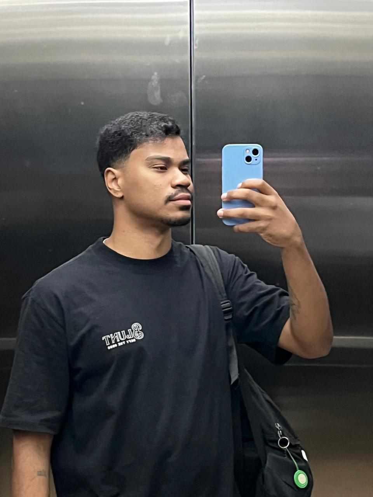

Sobre Mim
Olá! Me chamo Felipe, sou estudante de Análise e Desenvolvimento de Sistemas e tenho o sonho de, futuramente, atuar na área de cibersegurança.
Minha paixão por tecnologia começou cedo, ainda na época do Playstation 2, quando os jogos despertaram minha curiosidade sobre como tudo funcionava por trás das telas. Em 2015, assistindo à série Mr. Robot, essa curiosidade se transformou em uma verdadeira paixão por cibersegurança, área que hoje me motiva a buscar cada vez mais conhecimento.
Atualmente, meu foco principal de estudos está no backend, especialmente com a linguagem Java, que tem me chamado bastante atenção. No entanto, meu primeiro contato com programação foi pelo frontend, utilizando HTML, CSS e JavaScript. Aprender essas tecnologias foi uma experiência divertida e essencial para me motivar a seguir na área de tecnologia.
Estou em transição de carreira, sempre atuei nas áreas de vendas, varejo e organização de estoque, onde desenvolvi habilidades importantes como comunicação, trabalho em equipe, organização e planejamento. Essas experiências me ajudaram a construir uma base sólida de soft skills que levo comigo para o mundo da tecnologia.
No lado técnico, venho me dedicando ao aprendizado e prática de HTML, CSS, JavaScript (frontend), Java, Spring Boot e MySQL.
Fora do universo da tecnologia, sou apaixonado por esportes. Sempre fui uma pessoa ativa e disciplinada, principalmente com futebol, que jogo até hoje nos finais de semana, além de manter uma rotina de academia durante a semana.
Se quiser acompanhar minha evolução, conhecer meus projetos ou trocar uma ideia sobre tecnologia, fique à vontade para explorar meu portfólio e entrar em contato!
Habilidades
LINGUAGENS E TECNOLOGIAS
 HTML5
HTML5 CSS3
CSS3- JavaScript
 Java
Java SpringBoot
SpringBoot
Projetos
Contato
COMO ME ENCONTRAR